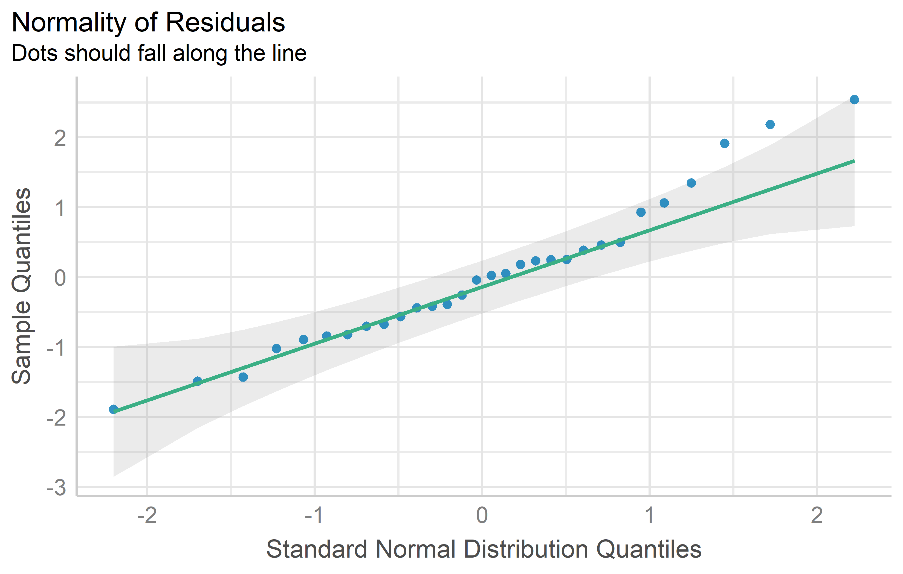
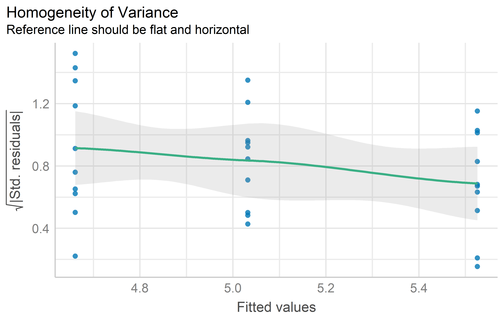

mod <- lm(weight ~ group, data = PlantGrowth)Model Diagnostics
Paul Schmidt ![]()
What is it?
Most statistical methods and all statistical models make certain assumptions (about the data generating process), and (test) results will be meaningless or misleading if theses assumptions do not hold. Therefore, model diagnostics should be used to check how well the assumptions of any given model are met.
Which assumptions?
As an example, we will specifically address the assumptions that ANOVA (analysis of variance) has. It makes sense to choose ANOVA because of its popularity and relevance in the chapters of this website. The following model will serve as an example throughout the chapter:
Note that both the PlantGrowth data and the lm() function come with base R and thus don’t need any extra imports. In a next step, we would want to run anova(mod). While all of the tests and plots that follow could also be produced with base R, I choose to use other packages here that I personally prefer for convenience and/or functionality reasons.
# (install &) load packages
pacman::p_load(
easystats,
olsrr,
qqplotr,
tidyverse
)Independence
Assumption: Individual observations are independent of each other (as opposed to dependent/correlated).
Model diagnostics are actually not used to verify this specific assumption. Instead, this assumption is justified if proper randomization was applied as part of the experimental design. Keep in mind, that there are indeed non-classical scenarios like repeated measures over time or certain experimental designs where observations are not (assumed to be) independent, but these are not covered in this chapter.
Normality
Assumption: The errors follow a normal distribution.
A model’s errors cannot be directly observed, but are estimated by their residuals; these residuals can be used for checking normality.
Yes residuals - not data!
Unfortunately, it is more common than it should be that people check whether their raw data (i.e. their response variable, e.g. yield) is normally distributed. This is not constructive. Instead, the model’s residuals should be checked for normality. Please see section “4 | ANSWERING QUESTION 1” in Kozak and Piepho (2018) for details.
QQ plot
Approximate normality can be assumed, if the dots in a QQ plot look close to a straight line. Kozak and Piepho (2018) point out that when it comes to checking normality, we need to be clear that we will never be able to check whether indeed the distribution is fully normal; instead, we should check whether it is approximately normal.
mod %>%
check_normality() %>%
plot(type = "qq")
Tests
As explained further below, I do not embrace using statistical tests to check assumptions, but instead suggest using the diagnostic plot above. However, for completeness I still provide the following information:
There are multiple statistical tests for detecting a violation of the normality assumption. A p-value < 0.05 would suggest such a violation:
ols_test_normality(mod)-----------------------------------------------
Test Statistic pvalue
-----------------------------------------------
Shapiro-Wilk 0.9661 0.4379
Kolmogorov-Smirnov 0.1101 0.8215
Cramer-von Mises 3.6109 0.0000
Anderson-Darling 0.3582 0.4299
-----------------------------------------------Variance homogeneity
Assumption: The error variance is the same at any set of predictor values.
Also referred to as homoscedasticity (i.e. the opposite of heteroscedasticity)
Res-Pred Plot
While this plot does not seem to have an established name, it always has raw/standardized/studentized residuals on the y axis and fitted/predicted values on the x axis. Variance homogeneity can be assumed if the residuals form an approximate horizontal band around the 0 line indicating homogeneity of error variance.
mod %>%
check_heteroscedasticity() %>%
plot()
Tests
As explained further below, I do not embrace using statistical tests to check assumptions, but instead suggest using the diagnostic plot above. However, for completeness I still provide the following information:
There are multiple statistical tests for detecting a violation of the variance homogeneity assumption. A p-value < 0.05 would suggest such a violation:
ols_test_breusch_pagan(mod)
Breusch Pagan Test for Heteroskedasticity
-----------------------------------------
Ho: the variance is constant
Ha: the variance is not constant
Data
----------------------------------
Response : weight
Variables: fitted values of weight
Test Summary
-----------------------------
DF = 1
Chi2 = 3.000303
Prob > Chi2 = 0.08324896 ols_test_bartlett(
data = PlantGrowth,
"weight",
group_var = "group")
Bartlett's Test of Homogenity of Variances
------------------------------------------------
Ho: Variances are equal across groups
Ha: Variances are unequal for atleast two groups
Test Summary
----------------------------
DF = 2
Chi2 = 2.878592
Prob > Chi2 = 0.2370946 Linearity
Assumption: The response can be written as a linear combination of the predictors.
This assumption can also be checked via the Res-Pred-plot from the Variance homogeneity section above. It can assumed to be met if the residuals spread randomly around the 0 line. In other words: At any fitted value, the mean of the residuals should be roughly 0. If this is the case, the linearity assumption is valid. I am not aware of any statistical tests for linearity.
Plots instead of tests
When it comes to diagnosing models, one may separate most approaches into two general categories: significance tests and diagnostic plots. Personally, I follow Kozak and Piepho (2018), who show that “residual plots are better for checking ANOVA assumptions than statistical tests”. Here are two key sections from their publication:
According to many authors (e.g., Atkinson, 1987; Belsley, Kuh, & Welsch, 2005; Kozak, 2009; Moser & Stevens, 1992; Quinn & Keough, 2002; Rasch, Kubinger, & Moder, 2011; Schucany & Ng, 2006), significance tests should not be used for checking assumptions. Diagnostic residual plots are a better choice. On such diagnostic plots, we can identify untypical observations, heterogeneous within-treatment variances, and lack of normality of the residuals (and thus, of the dependent variable within treatments).
[…]
There are two possible reasons for the overuse of statistical tests to check assumptions. First, many researchers base their knowledge on books first published 40 years ago or earlier. Back then, using statistical tests was relatively simple while using diagnostic plots was difficult; thus, these books advised the former, often even not mentioning the latter. Second, most statistical software offers statistical tests for checking assumptions as a default. Using default tests is simple, so users use them. However, we explained why we think that significance tests are not a good way of checking assumptions (in general, not only for ANOVA). First of all, with large samples (a very desirable situation) we risk that even small (and irrelevant) departures from the null hypothesis (which states that the assumption is met) will be detected as significant, and so we would need to reject the hypothesis and state that the assumption is not met. With small samples, the situation is opposite: much larger (and important) departures would not be found significant. Thus, our advice is to use diagnostic plots instead of hypothesis testing to check ANOVA assumptions.
Problematic cases
You may encounter situations where the assumptions for Normality, Variance homogeneity and/or Linearity do not seem to be met. Instead of simply not doing any ANOVA, you have two options to proceed: Transforming your data and using generalized linear models.
Data transformation
Transforming the response variable (e.g. yield) with a mathematical function (e.g. square root) can actually solve your problem. If the diagnostics of a linear model improve noticeably by replacing yield with sqrt(yield), you can simply use the latter to conduct an ANOVA and draw conclusions from it. Moreover, you can also compare means via post hoc tests. What follows is an example1 where this approach does as intended.
Click to show/hide code
pacman::p_load(agridat,
easystats,
emmeans,
multcomp,
multcompView,
tidyverse)
dat <- agridat::bridges.cucumber %>%
filter(loc == "Clemson") %>%
mutate(colF = as.factor(col),
rowF = as.factor(row))You can see that the QQ plot for mod2 does indeed look better than that for mod1. Thus, we can and should conduct the ANOVA for mod2. Its interpretation or rather the conclusions drawn from it are essentially the same - irrespective of whether yield or the square root of yield was modeled: There are significant differences between the genotypes.
anova(mod2)Analysis of Variance Table
Response: sqrt(yield)
Df Sum Sq Mean Sq F value Pr(>F)
gen 3 10.5123 3.5041 8.8966 0.01256 *
rowF 3 5.0283 1.6761 4.2555 0.06228 .
colF 3 4.2121 1.4040 3.5647 0.08670 .
Residuals 6 2.3632 0.3939
---
Signif. codes: 0 '***' 0.001 '**' 0.01 '*' 0.05 '.' 0.1 ' ' 1It is a little bit different when it comes to mean comparisons via post hoc tests. Not because of the conclusion part - this is the same here, too: e.g. two genotype means may be significantly different from each other according to the Tukey test. However, the mean itself can be irritating, since noone is used to dealing with square roots of yields. However, it is valid to present the means on the backtransformed (= original) scale, as long as it is made clear to the reader that the model fit and mean comparisons were made on a different (= square root) scale.
mod2 %>%
emmeans(specs = ~ gen, type = "response") %>%
cld(Letters = letters) gen response SE df lower.CL upper.CL .group
Poinsett 20.9 2.87 6 14.4 28.5 a
Sprint 25.1 3.14 6 18.0 33.3 a
Guardian 30.4 3.46 6 22.5 39.5 ab
Dasher 45.3 4.23 6 35.6 56.3 b
Results are averaged over the levels of: rowF, colF
Confidence level used: 0.95
Intervals are back-transformed from the sqrt scale
Note: contrasts are still on the sqrt scale
P value adjustment: tukey method for comparing a family of 4 estimates
significance level used: alpha = 0.05
NOTE: If two or more means share the same grouping symbol,
then we cannot show them to be different.
But we also did not show them to be the same. Note that type = "response" can do the back-transformation for us automatically2 and specifically see the part of the message below the mean table that reads “Intervals are back-transformed from the sqrt scale. Note: contrasts are still on the sqrt scale”.
Generalized linear models
TO DO
Additional Resources (click to show)
General
- What’s normal anyway? Residual plots are more telling than significance tests when checking ANOVA assumptions (Kozak and Piepho 2018)
- Chapter 13 Model Diagnostics in Applied Statistics with R (Dalpiaz, 2022)
- Chapter 8 Model Diagnostics in Course Handouts for Bayesian Data Analysis (Lai, 2019)
- 🇩🇪 Verbleibende Plots interpretieren, um Ihre Regression zu verbessern
- {olsrr}
Normality
- R Tutorial: Normal Probability Plot of Residuals
- For this specific purpose, QQ plots may also be called Normal probability plots
- {qqplotr}
Homoscedasticity
- Documentation on tests from {olsrr}
- Wikipedia article on Homoscedasticity and heteroscedasticity
Transformation
- 🇩🇪 Chapter 3.3 in Dormann and Kühn (2011)
References
Dormann, Carsten F., and Ingolf Kühn. 2011. Angewandte Statistik Fur Die Biologischen Wissenschaften. 2nd ed. Helmholtz Zentrum fur Umweltforschung-UFZ.
Kozak, Marcin, and Hans-Peter Piepho. 2018. “What’s Normal Anyway? Residual Plots Are More Telling Than Significance Tests When Checking ANOVA Assumptions.” Journal of Agronomy and Crop Science 204 (1): 86–98. https://doi.org/10.1111/jac.12220.
Footnotes
This is the same data as in the latin square chapter.↩︎
This works only if you did the transformation as part of the model as we did here in
lm(). It cannot work if you did the transformation by creating a column in the dataset before fitting the model.↩︎